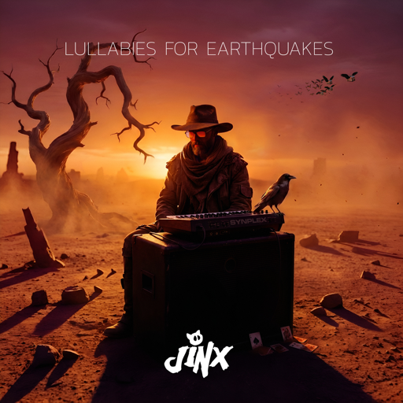

↓ Download cover artWith thirteen tracks bookended by dub, Lullabies For Earthquakes is an aural road movie across the globe.
From the Poe-quoting brass of The Raven to the spaghetti western desert of The Crooked Hand, the album moves through Nordic folklore, French and Swedish poetry, poker tables without winners and post-apocalyptic deserts without ever losing the thread.
It's an album about the immovable and the fleeting, stone monuments and passing spirits, ancient things and the modern hands that reshape them. Each song is written with imagery in mind - the natural overlap of a musician who also thinks in images. This is why LFE carries on what the 2018 album Dreamcatcher began: creating musical picture books. Small stories, vignettes, stops on the road trip.
While dub is still a core element to many tracks, the album spans a wide variety of genres, classical, retro and current - Ambient to Trip Hop. Traditional folk instruments tangle with synths, tabla shuffles meet abyssal doom, and film scores sit comfortably beside witchy folk melodies. Restless, cinematic, and quietly reverent — music for the calm before, during, and after the storm.
Jay's original alter ego. Pretty much. Jinx started out making Gabber, Hardcore Techno & Jungle in the late 90s and early 00s. They found a home on mp3.com where they released several albums of questionable quality but some minor chart successes.
After a long break between ca 2004 and 2010 they began to stretch their legs on YouTube, with a filterless deluge of everything from melodic and atmospheric folk to dubstep.
After coalescing into a new more composed project they released the album Dreamcatcher in 2018, a project many years in the making. This album firmly sculpted Jinx into what it is today - a musical storytelling mechanic, using traditional music from around the world mixed with Swedish melancholy and modern electronic sounds. With the world doing its thing for a few years (you know who you are, 2020-2022!) it took the creation of multiple new, other projects to get Jinx fully creative again.
With the release of Lullabies For Earthquakes, Jinx again evolves the same idea of narrative sound into new directions. Work has slowly begun on the next stage: 'By Strange Airs Called, of Old Tongues Borne'.
{kind=link}